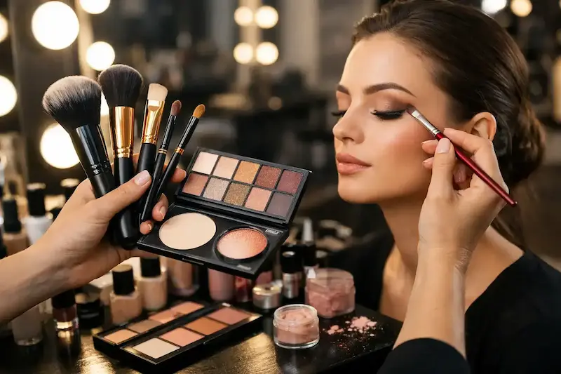

Лучшие тени для глаз: рейтинг и советы визажистов
Правильный выбор теней помогает подчеркнуть глаза, сделать взгляд выразительным и гармоничным. В этом обзоре мы собрали популярные средства: палетки, кремовые и сухие тени для разных типов кожи и оттенков глаз.
Консультации / Записаться
Популярные обзоры по теням для глаз
Типы теней
Различия по текстуре: сухие, кремовые, палетки.
Выбор оттенка
Как подобрать цвет для вашего типа глаз и кожи.
Нанесение и техника
Советы по растушёвке, созданию градиентов и smoky eyes.
Популярные палетки и тени
Обзор лучших средств: Anastasia, NYX, MAC и Benefit.
Инструменты для макияжа глаз
Кисти, аппликаторы и спонжи для идеального результата.


Типы теней для глаз
Тени для глаз бывают разных текстур и финишей — от сухих матовых до кремовых и шиммерных. Каждый тип подходит для определённых техник макияжа и целей: повседневный, вечерний или профессиональный.
Сочетание разных типов теней позволяет создавать многомерные образы — от мягких нюдовых до выразительных smoky eyes. Начинающим визажистам часто рекомендуют начинать с базовых палеток с универсальными оттенками.


Как выбрать оттенок теней для глаз
Правильно подобранный оттенок теней помогает подчеркнуть цвет глаз и сделать взгляд более выразительным. При выборе цвета важно учитывать оттенок радужки, тон кожи и общий стиль макияжа.
Для дневного макияжа чаще выбирают нейтральные нюдовые оттенки, а для вечернего — более насыщенные и контрастные цвета. Комбинирование нескольких оттенков помогает создать плавные переходы и эффект профессионального макияжа.


Нанесение и техника теней для глаз
Правильная техника нанесения теней помогает сделать макияж глаз более аккуратным и выразительным. Даже базовые приёмы позволяют создать профессиональный результат и подчеркнуть форму глаз.
Для повседневного макияжа достаточно 2–3 оттенков, а для вечернего образа можно использовать больше цветов, создавая плавные переходы и эффект глубины.
Нужен профессиональный макияж?
Если вы хотите подобрать идеальный тон или сделать профессиональный макияж, обратитесь к опытному визажисту.
Посмотреть услуги визажиста

Советы визажиста: как сделать макияж глаз идеальным
Следуя этим рекомендациям визажистов, вы сможете создавать аккуратный и выразительный макияж глаз как для повседневного образа, так и для вечернего выхода.

Инструменты для макияжа глаз
Качественные инструменты помогают наносить тени аккуратно и создавать плавные переходы между оттенками. Правильно подобранные кисти и аппликаторы делают макияж глаз более профессиональным и удобным в выполнении.
Для повседневного макияжа достаточно 2–3 кистей, но для более сложных техник визажисты используют целые наборы инструментов для точного нанесения и растушёвки теней.
Популярные палетки и тени для глаз
Палетки теней помогают создавать разнообразные образы — от естественных дневных до выразительных вечерних макияжей. Ниже — самые популярные и качественные варианты, которые используют визажисты и любители макияжа.

Нюдовые и универсальные оттенки для любого случая

Сочетание матовых и сияющих оттенков

Много оттенков для дневного и вечернего макияжа

Бюджетная палетка с розовыми и нейтральными оттенками

Мини‑палетка с профессиональными оттенками

Нейтральные оттенки для универсального макияжа

Элегантная палетка с насыщенными оттенками

Кремовые тени с отличной пигментацией

Большой выбор оттенков для творческих образов

Классическая нейдральная палетка для повседневки

Доступная палетка с базовыми нейтральными оттенками

Широкий спектр оттенков для всех случаев
Частые ошибки при нанесении теней для глаз
Чтобы макияж глаз выглядел аккуратно и профессионально, важно правильно подбирать оттенки, использовать базу, растушевывать тени и применять соответствующие кисти.
Часто задаваемые вопросы о тенях для глаз
Как выбрать оттенок теней для глаз?
Выбирайте оттенки в зависимости от цвета глаз, тона кожи и желаемого эффекта. Светлые оттенки делают взгляд ярче, темные создают глубину и выразительность.
Какие кисти нужны для нанесения теней?
Минимальный набор: плоская кисть для нанесения, пушистая для растушевки, маленькая кисть для деталей. Хорошие кисти помогают достичь профессионального результата.
Нужно ли использовать праймер под тени?
Да, праймер увеличивает стойкость теней, предотвращает осыпание и скатывание, особенно на жирных веках.
Как избежать осыпания теней?
Используйте праймер, аккуратно набирайте тени на кисть и растушевывайте. Для мелкой пыли можно нанести немного прозрачной пудры под глазами.
Как сделать макияж глаз более выразительным?
Используйте контрастные оттенки в складке века, добавьте светлый оттенок в внутренний угол глаза и используйте подводку или тушь для завершения образа.